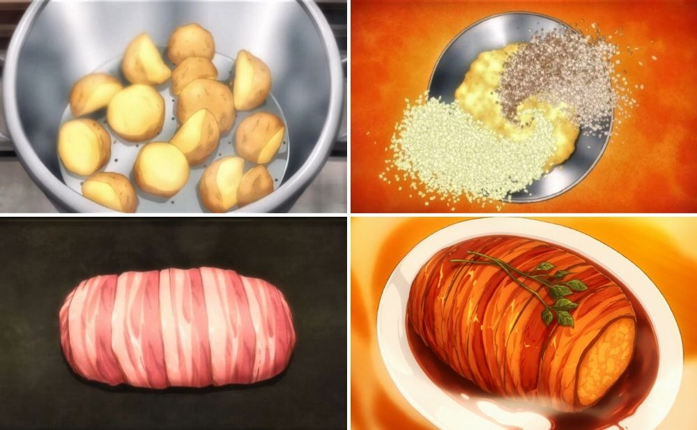

Gotcha pork roast - Food wars

Ingredients
- 3 russet potatoes
- ¾ cup of king oyster mushrooms
- ¾ cup of onion
- 2 packs of thick-cut bacon
- 2 to 4 sprigs of fresh rosemary
- Watercress
- Salt
- Pepper
- Baker’s twine
- Sweet sake soy sauce
- ½ cup of red cooking wine
- 2 tbsp butter
Steps
- Peel and cut the potatoes into cubes. Steam for 10 to 12 minutes until the potatoes are soft.
- Mash the potatoes and set aside.
- Chop both the onion and king oyster mushroom finely.
- Heat the saucepan on medium heat and fry the minced onions and king oyster mushrooms with olive oil. Cook until golden brown and set aside.
- Mix the mashed potatoes, fried minced onions, and king oyster mushrooms. Mash it to form a huge oval loaf.
- Wrap the mashed mixture with strips of bacon. Tie it with baker’s twine so that it won’t fall apart.
- Add parsley on top of the bacon.
- Heat the oven to 148°C and bake for 35 to 45 minutes until the bacon is golden brown.